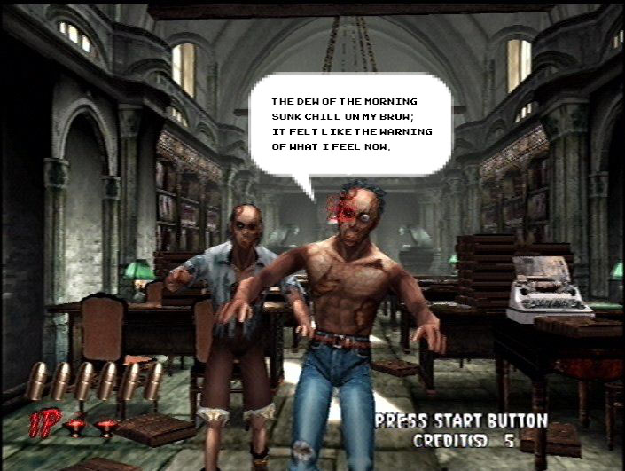
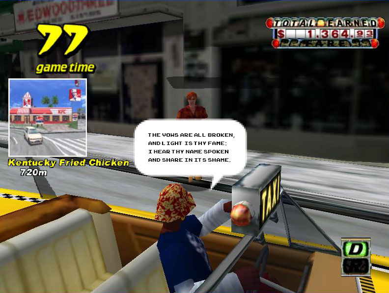
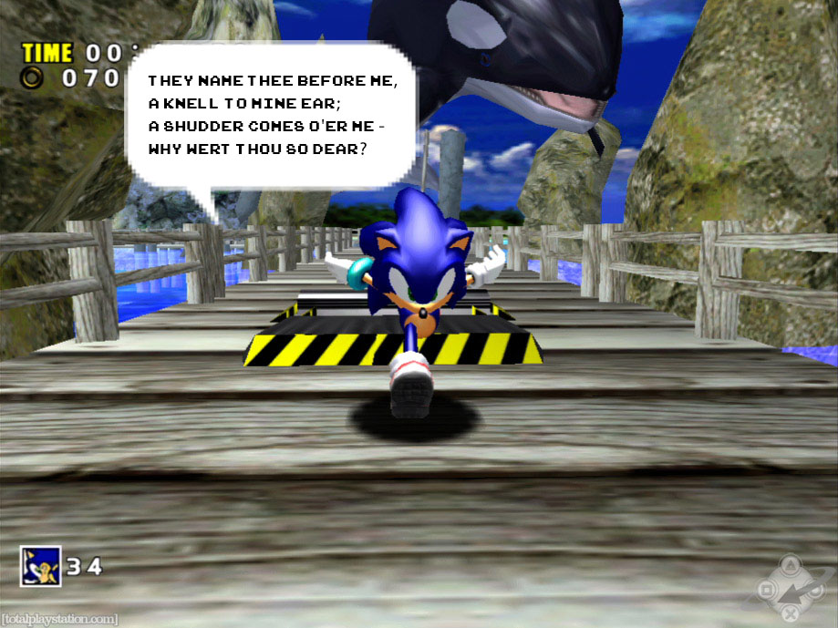
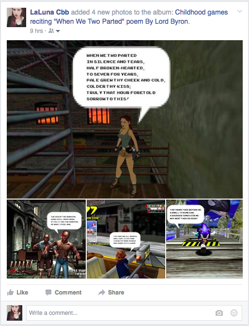
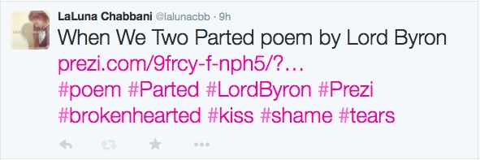

Republish a Text (test)
Platform One
For this project, I decided to use old childhood games to publish my poem When We Two Parted by Lord Byron and post them in an album on Facebook entitled Childhood games reciting "When We Two Parted" poem By Lord Byron.





Platform Two
For the second attempt I used Prezi to layout my poem in an interactive way and shared it via Twitter
Poem in Prezi